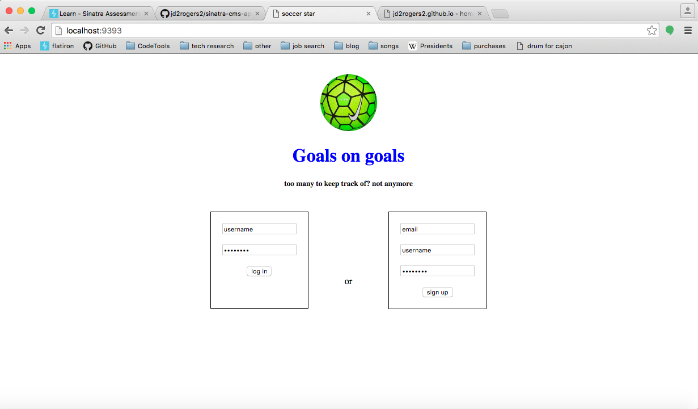
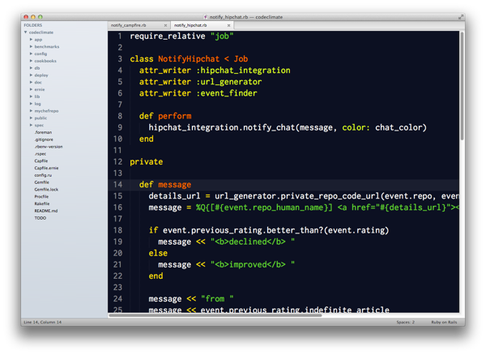

Thinking > coding
I recently went on a canoeing and camping trip on the Saco river in Maine with some friends. One of them happens to be a junior web developer of sorts at Cengage. Naturally I asked him everything I could about his first job as a developer and his response surprised me. When I asked him if he’s learning a lot of new cool code, he said no, he said that he was learning how to think more like a programmer.
It finally made sense to me when I heard something similar from a Flatiron employee guest speaking on a webinar. He said that when he first started he took a problem, that he could not work out, to his boss and they went through it together; he was amazed that his boss took an hour or more to think everything over and write out pseudo code before even writing one line of actual code.
Keeping all this in mind as I worked on my final project for Rails made it such a pleasant experience. I feel like I wrote more code than ever before and yet I can still comprehend and organize it all in my head. After finishing my Sinatra app I was so burnt out that I was probably writing really bad code and hardly refactored.
I’m very pleased with my app and I credit this to two main things, the first is thinking more than coding as you’ve read about above, and the second is to refactor as you go. My main technique for this was, every time I noticed that I was writing a line of code even remotely similar to something else in my app, I would make a comment below that line and get back to it after getting that section running. This way you don’t end up with a lot of scrappy code and too much refactoring to do at the end. Also, if you refactor as you go you get to take little breaks from the creative thinking (well, for a different type of creative thinking anyway) and this gives you more time to reflect on the code you just wrote and if you like how it works in the grand scheme.
Hopefully you can learn these lessons earlier than me and it will save you some stress! Link to my rails dilemma app repo here
posted 22 September 2016Nested Attributes Make Me RESTless

I’m no expert on Rails (or anything really for that matter), but it seems to me, with all the convention that’s built in, that nested attributes would also follow REST conventions in their naming, since they are likely to correspond with a nested resource or an index of another Model's index.
I’ll explain more, in this example we’re creating a new blog post and a new tag as well. So, for instance, instead of tag_attributes for the nomenclature of the hash why not just tags? The way rails is set up now we already have tag_ids as a key in our params hash, and it’s value would be an array of IDs (integers). We also have tag_attributes if we want to make a new Tag instance that is associated with this post. Wouldn’t it by DRYer to have just tags as a key? I think that the tags key could point to an array of IDs just like tag_ids but then create a new instance every time it encounters a hash. It would also automatically sequence to the next ID number for the new tag(s) because it would know the next number in the sequence from the original database call. Below is an example of the tags key in the params hash, with three existing tags, and two new, being associated with our new post.
- :params => {
- :tags => [2, 3, 8, {id: 9, name: “silly post"}, {id: 10, name: “serious post"}]
- }
This would do away with the nasty numerical key that corresponds with a hash of attributes for the new tags (tag_attributes) params key; which are seemingly irrelevant except as placeholders anyway, they are not IDs of the new instances. As in the 1 and 0 below:
- :params => {
- :tag_ids => [2, 3, 8],
- :tag_attributes => {
- 0 => {name: “silly post”}
- 1 => {name: “serious post”}
- }
- }
All this being said (and it wouldn’t be a proper post on my site if it didn’t include the line “I had trouble with [something]”), nested attributes were hard for me to grasp at first and I’m sure this wouldn’t have helped at all.
posted 25 August 2016New to working with APIs
I recently spoke with a lot of other students at the Flatiron School, where I take online classes, regarding an attempt at building our own app. I saw some of the projects that they had been working on and was very impressed. After asking some questions, I found that their coding abilities weren’t too far ahead of my own apart from the knowledge of adding and working with APIs.
These APIs were making a standard new app much more interesting, and I’m being told by the students that they simply found this API online and followed directions to incorporate it into their code. Could it be that easy? I only had a vague understanding of what an API was and had no idea how to integrate them into my code. So if you are anything like me, read on.
Research break...
I've found that an API is a program (not always separate from the main function) on a server that dishes out information upon request. This is basically a way for your program to work with the data that any user can plainly see on that website but wouldn’t like to copy manually to due quantity i.e. (latitude and longitude from Google maps, or friends on Facebook).
So it turns out that most APIs do, in fact, have documentation; but I also found that this documentation can be very difficult to follow for a first timer and that it will certainly take practice. You’ll also have to register an account with the developer site for authentication purposes.
I decided to do some hands-on research with the Spotify API. The code they provide is all NodeJS, I only have very basic javascript knowledge so this took rather long, but once I pasted what and where I was supposed to, we were up and running. I can now build apps that a user could log in with their Spotify account and my app would be able to work with their favorited songs and playlists to hypothetically recommend local shows etc.
posted 3 August 2016Over-writing is NOT the answer
I’ve just finished my first web app and I’m very proud of it as I put a lot of time into it; but I have learned some very important lessons this week, and those are to work smart and plan ahead. I literally felt done with the app at least three times but then decided to add another capability. This is not an easy thing in the world of code, my friends. So I say to you, think hard about what you want your app to do and stick to the plan; otherwise you may end up with 10-15 files with 100+ lines of code each, and I don’t know about you but that’s beyond my current mental capacity and code skills.
Often times over complicating your code can break it or make it incomprehensible. A couple questions I wish I had asked myself:
- 1. What is the cleanest and smartest way to organize my code before starting? (keep it flexible for future additions)
- - Do this by abstracting i.e. creating lots of helper methods
- 2. How would I simply and easily (without sacrificing doing it the right way) add this capability to my current app?
- - Also at this point, you should be re-asking question 1
I hope that you can use these questions ahead of your next project to save you some time and stress. Happy coding.
Feel free to comment/fork/contribute/etc. via my github
posted 28 July 2016[on your mark] get ‘/set/go’
Alright, let me just say one thing, Sinatra is awesome. Once you learn Sinatra as a student coder, Ruby and the front end are finally connected and it feels like you can do anything with it.
Now that we have that out of the way… Working with forms and controllers has such nice flow. As you start with a simple "get ‘/signup’ do” and have a form for creating a username and password, instinctively you know that you need to pass that information back to the controller. How do you do that? With a method=“POST” and let’s say an action=“/profile” in your input tag, then a corresponding “post ‘/profile’ do” in your controller should come easy as the next step. Lastly, how would display said information back to the user, with an instance variable and some erb tags in your view file. You can build more complicated things from there but you’ll always be following that form-controller-view pattern.
As you dive into the details your flow gets a little choppy though and that’s because, let’s be honest, a params hash in a patch route can be long and ugly. Now, instead of params[:name] you have params[:user][:name] or something and in your form you have name=“user[name]” (or worse, name=“user[list][ ]") instead of name=“name”.
Keeping something like that straight in your head can be tough so I find the best solution is to not keep it in your head. Open another text editor window and shrink it as small as you’d like and keep a model of your hash in there.
Creating the model and setting up the names to the input was often the hardest part, but if you stick with it and test as you go, you will end up saving yourself a lot time and flipping back and forth between form and controller.
So... on your mark, get set, go!
posted 13 July 2016Learning sql just takes persistence
At first, sql was an easy language to pick up. It was pretty basic, just creating tables, inserting into them, selecting from them, altering them… Things were great, now my programs could persist data. Then it was time to starting joining and all of the sudden things were not great, things were bad. I spent the next two to three hours very frustrated that I couldn’t grasp this concept.
After reading practically every stack exchange question on sqlite joining I figured out a way to understand it that works for me. Looking back it seems easy now but it just didn’t click until I thought of the statement with a new comma placement. At first I was reading:
- SELECT * FROM table1,
- INNER JOIN table2,
- ON table1_column = table2_column;
Then I started to realize that it helps to read it like:
- SELECT * ,
- FROM table1 INNER JOIN table2,
- ON table1_column = table2_column;
So now things were great again, we even started learning how to link our sql database with our ruby code. This was really neat until we started to build abstract and dynamic super classes that would work (build tables and such) for any child class. Things were again bad.
The trouble I was having this time was with interpolating method names into the sql string. Sometimes I found I could just interpolate in the standard fashion, other times I found I would need to interpolate and put it in "quotes" and ‘single quotes’, or any combination of the three. My friends, I wish I could tell you I figured this one out but alas this is why I say learning sql just takes persistence.
posted 22 June 2016Finishing my first gem
I literally just finished my first gem and it is a really awesome feeling. I coded a program that can output the weather for any zip code in the US. It can also tell you some weather information for the coming days. It scrapes from weather.gov.
The best part actually came on Friday (three days ago), when I finished writing the command line portion of the program so that you can actually experience what it does. When I could type in any zip code I wanted and it would output the town/city’s name, I was a little impressed with myself. When you type in the zip it interpolates that into the url and then scrapes from that weather.gov url. It takes the weather and temp (among other things) from that url; this was the first program I had written by myself that had a massive amount of outputs, and I hadn’t even defined the outputs.
The next feeling of accomplishment came today when I put the finishing touches on and wrote this blog. Looking back over the past year, I’ve come a long way from just knowing basic html/css, to building my own computer, to starting slowly on codeacademy, to jumping all in and applying to The Flatiron School.
posted 13 June 2016Ruby Gem Filetree Setup
As I started to learn scraping, I actually found one of the hardest things to be the project set up and packaging the project as a gem. Requiring different things in different files, shell scripts, shebang statements, and all the other files that support your code but aren't widely talked about online.
After searching the web, I found no filetrees that also had descriptions of what the file did and what content to include. So I thought I would build a list of everything that goes in your root directory for a ruby project. I hope you like it.
A quick note for those who have a similar skill level as I do now: you may be wondering about shell scripts and requiring gems/files, I have listed some additional links at the end of this blog for you.
- root directory - holds all files and folders (folders end in a backslash below)
- bin/ - this folder generally only holds executable files (make files executable by running chmod in your command line, ls -l should then show x's if successful
- runner - sometimes also named after the project
- this is where you actually call the classes/methods to run your program
- make sure to include require “environment”
- console - this file is used to peak inside your program, along with test variables and such, using IRB
- at the top make sure to have a shebang statement that will load your program in ruby, usually looks something like #!/usr/bin/env ruby
- should require bundler/setup, IRB, and the file where your ruby code is. at the end call IRB.start
- setup - this file houses code that define settings that your program will abide by
- so if it is a cli program we would start with #!/bin/bash
- other commonly included things are set -euo pipefail and IFS=$'\n\t'
- more on these below in resources but the first specifies error settings, and the second, line break settings (IFS stands for internal field separator)
- another best practice is to include bundle install in this file
- config/ - conventionally only has your environment file
- environment.rb
- here is where you require all gems and files needed for the runner, this way you can just require environment in your runner. separation of duties
- should require lib and all necessary gems
- lib/ - basically everything internal goes here: modules, classes, and methods
- example.rb
- spec/ - holds all tests
- example_test.rb
- data/ - houses anything else needed for the project i.e. media
- gemfile - here is where your project actually loads all necessary gems, so list all of them in the gem "name" format
- gemfile.lock - when you bundle gem and rspec init from the command line, before starting any work on your project, this and the gemfile will be added automatically. this file is locked
- readme.md - an explanation of what your program is used for and how to use it
- license.md - copyright mumbo jumbo
- it is conventional to borrow a stock license provided by github
- rakefile - automates a lot of the build process for you
- contributing.md - info on editing open source software, such as format and test fixes
- .gitignore - tells git which files to ignore during commits, github has samples you can borrow
- .rspec
- root.gemspec
- here you list attributes about your gem
- make sure to list all your files using `git ls-files`.split($\)
- also make sure to list just your runner file as an executable
- my sources
- instructors at The Flatiron School
- http://learnrubythehardway.org/book/ex46.html
- https://www.ruby-forum.com/topic/213637
- https://github.com/blog/1184-contributing-guidelines
- http://guides.rubyonrails.org/initialization.html
- http://guides.rubyonrails.org/command_line.html
- additional resources
- http://stackoverflow.com/questions/9549450/how-to-setup-a-basic-ruby-project
- http://howistart.org/posts/ruby/1
- http://bundler.io/v1.11/bundler_setup.html
- https://sipb.mit.edu/doc/safe-shell/
- https://quickleft.com/blog/engineering-lunch-series-step-by-step-guide-to-building-your-first-ruby-gem/
- http://stackoverflow.com/questions/4128235/what-is-the-exact-meaning-of-ifs-n
- http://stackoverflow.com/questions/13872048/bash-script-what-does-bin-bash-mean
Why did I decide to learn software development?

In short... because I tried some other things and enjoyed this the most. I wasn’t being challenged at my last position, so I decided to start figuring out what I wanted to do.
It started when I picked the wrong major and the wrong school and breezed through college with minimal effort. Then I finally got a job in real estate but wanted more. I dipped my feet in a lot of different areas such as GMAT studies, series 7 studies, building a PC, and ended up really enjoying the PC.
After lots of research on how each component works, I finally felt like I had a good idea of what I wanted to buy. Then a day or two of tinkering, maybe I had to buy one more component I can’t remember, and then downloading Linux to a USB and booting; and I was done! It’s a really cool experience, using a computer that I had built. Naturally I wanted to continue, so I poked around on some MOOC Java classes and CodeAcademy and what not. After a while of that, it was time to take the plunge, so I started researching full time classes.
Obviously a big part of my decision was the return on investment. I’d get to be a part of an industry with massive growth and that is the cool thing right now; the salary bump wasn’t bad either, and all for a minimal investment.
I had been saving for at least a year already, since I knew I was going to be making a career change. So a little sacrifice there in the form of reduced spending, mixed with the opportunity cost of no income for 3-6 months, tuition, and (again) 3-6 months of hard work; but that’s it, that’s really all of the expenses.
Flatiron was a no brainer. No other bootcamps have released jobs reports or offer tuition reimbursement, and the price for the online Learn Verified program can’t be beaten.
posted 12 May 2016